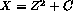
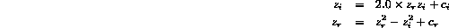
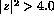

The Mandelbrot Set is the set of numbers resulting from repeated iterations of the following function 
which, separating real and imaginary components, looks like,

for complex numbers, Z and C. This function is defined for complex values of C=(cr,ci) in the range ([-1.0,1.0], [-1.0,1.0]), with the initial conditions, z=c. In the case study, we will mainly be concerned with the Mandelbrot Set defined in the first quadrant of the complex plane, i.e. we will consider c in the range ([0.0, 1.0],[0.0,1.0]).
What is normally plotted is the number of iterations taken for z to reach some threshold value. We will take this threshold as 
and set an upper iteration limit of 255. This number is converted into a greyscale or colour, and plotted at the point whose coordinates are (cr , ci).
Below is a fragment of a serial FORTRAN 77 code which computes the Mandelbrot set. This should outline the algorithm to be used in the full HPF version.
c Declare N*N arrays for real and imaginary parts of
c arrays C (CR, CR) and Z (ZR, ZI)
c ...
c Initialise arrays CR, CI
c Initialise arrays ZR=CR, ZI=CI
c ...
c Initialise ZIS and ZRS to hold the squares of ZR and ZI
c ...
DO i = 0, 255
DO j = 1, N
DO k = 1, N
IF (ZRS(j,k) + ZIS(j,k) .LE. 4.0 ) THEN
ZRS(j,k) = ZR(j,k) * ZR(j,k)
ZIS(j,k) = ZI(j,k) * ZI(j,k)
ZI(j,k) = 2.0 * ZR(j,k) * ZI(j,k) + CI(j,k)
ZR(j,k) = ZRS(j,k) - ZIS(j,k) + CR(j,k)
COLOUR(j,k) = i
END IF
END DO
END DO
END DO
c ...
Write an HPF program, based on the above code fragment, which will compute the Mandelbrot set, using the Fortran 90 array features (WHERE and FORALL etc) to carry out the various stages. Use the following skeleton program (which is available by clicking here) to base your answer on.
PROGRAM mandel
IMPLICIT NONE
INTEGER, PARAMETER :: N=64, RESOLUTION=255
! 1) Declare main arrays
!
! 2) Initialise cr and ci using FORALL
!
! 3) Initialise other arrays
!
! 4) Main loop: RESOLUTION number of iterations
!
! 5) Work: Fortran 90 translation of given FORTRAN 77 code
!
! Open output file
!
OPEN(UNIT=10, FILE='mandel.pgm')
WRITE(10, FMT='(''P2'',/,i3,2x,i3,/,i3)') N, N, RESOLUTION
WRITE(10,*) colour
CLOSE(UNIT=10)
END
The following steps are needed:
Initialise the rows of CR (real component of C) to be equidistantly valued in the range [0.0,1.0] (i.e. every element in the first row has value 0.0, every element in the last row has value 1.0, and the intermediate rows have values increasing by a constant amount as the rows are traversed ). Initialise the columns of CI (imaginary component of C) similarly. Use FORALL for this initialisation. As an example, a 6 element CR matrix would look like
0.0 0.0 0.0 0.0 0.0 0.0
0.2 0.2 0.2 0.2 0.2 0.2
0.4 0.4 0.4 0.4 0.4 0.4
0.6 0.6 0.6 0.6 0.6 0.6
0.8 0.8 0.8 0.8 0.8 0.8
1.0 1.0 1.0 1.0 1.0 1.0
Set the initial conditions ZR and ZI to be CR and CI respectively and define variables ZRS and ZIS to be the square of ZR and ZI respectively.
Rewrite the above FORTRAN 77 code using Fortran 90 array syntax, using the WHERE construct.
This program takes each point at a time and iterates the complex function (up to a maximum number of iterations, RESOLUTION = 255) . The iterations stop when the absolute value of Z reaches or exceeds 2. The colour values are a measure of how many iterations it took to ``escape'' to 2 at each point.
To write out the COLOUR array as a bitmap, use similar instructions as were used in the Game of Life. Include the following lines of code at the end of your program,
OPEN(UNIT=10,FILE='mandel.pgm')
WRITE(10,fmt='(''P2'',/,I3,2X,I3,/,I3)') N, N, 255
WRITE(10,*) colour
CLOSE(10)
Compile and run the code on a single workstation, with the size of the arrays set with N = 128. View the resulting bitmap with
xv mandel.pgm
and check that the code works correctly (i.e. you recognise the bitmap to be the well known Mandelbrot set).
Add HPF directives to parallelise the code.